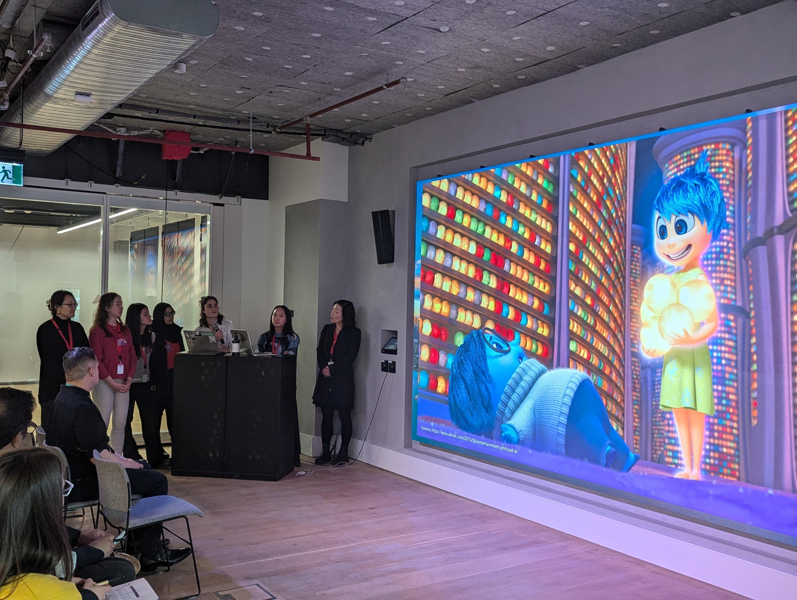

Notable Achievements
Accenture Tech Bootcamp
July 2024
Developed a web solution called ColorQuest which helps people with mental health disorders do daily tasks
Developed frontend in React and utilized AWS Amplify for seamless deployment, integrating with DynamoDB and
GraphQL for efficient data querying and storage
Included a Gen-AI component using Python that generates images based on user prompt to show tasks completed
The team won second position!!

Australian Local Conference of Youth Delegate
17 October 2023
The conference aimed to provide input into the 2023 Global Youth Climate Statement, which will be submitted to the climate negotiations at the 2023 United Nations Climate Change Conference (COP28).
STEM Sisters Ambassador
March 2022 - March 2023
Provides international female STEM students with opportunities to enhance their professional skills
Involves 5 traning sessions for ambassadors, delivering on-campus workshops and school outreach activities
Accenture Tech Bootcamp
February 2021
Redesigned the UI/UX of the MyWizard AiOps: a portal that has information on clients
Created user workflows and personas to understand user requirements
Design a functional Figma prototype to easily navigate the website and gain useful information
In a cohort of 15 female students, we are exposed to Transurban operations and hands-on workshops that help us build our personal brand and navigate our careers after graduation.
In a cohort of 150 female students, we are exposed to Cisco technologies and operations and hands-on workshops that help us build our personal brand.
Plan and organize events that promote humanitarian engineering and provide engagement with our members like the Bunnings BBQ, O-Week and Jaffies Night.
Startmate Student Fellowship
June 2021 – July 2021
In a cohort of 150 students, learnt about operations of startup from reputed founders of Eucalyptus and Blackbird. Was also paired up with a mentor who gave me insight into his startup 'Known'.
Part of the Imagine Cup Mentorship Team which involes working out the logistics for the Imagine Cup Mentorship program, a student developer held by Microsoft in which students come up with a meaningful solution to global issues using Microsoft tech.
Udacity Microsoft ML Scholarship
July 2020
This scholarship was provided by Udacity in collaboration with Microsoft. I had learnt about machine learning by working in the LIVE Azure environment with training models and laying the foundations for both supervised (classification and regression) and unsupervised (clustering) approaches.
Monash International Merit Scholarship
March 2019 - March 2022
This scholarship is awarded to high achieving international students in Monash university
A mentorship program for first year engineering students to help them settle in university and make the best out of university life
A mentorship program to help students prepare abstracts and presentation for International Conference of Undergraduate Research (ICUR)
A mentorship program for first year IT students to help them settle in university and make the best out of university life
Presenter: International Conference of Undergraduate Research (ICUR) 2019
September 2019
My research involved finding a substitute for concrete as it produces a lot carbon emissions in its production phase which is a major issue given the current global warming scenario. I chose hempcrete, mixture of binder and hemp fibres as it absorbs carbon dioxide and discussed its suitability as a substitute.
Monash University Islamic Society Sub-Committee Member
March 2019 - March 2020
I was a part of a team which held events to support the needs of Muslim Monash students like spiritual lectures and we also held bbqs and social nights for all Monash students